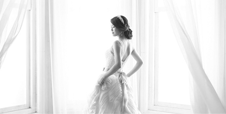
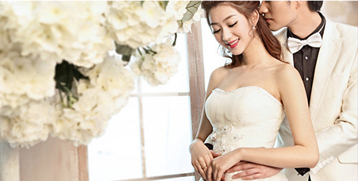

公司简介
首页
公司简介
-
公司简介/WEDDING PHOTOS
金夫人-是中国专业的婚纱摄影公司。金夫人婚纱摄影是在国家改革开放政策的指引下成长起来的重庆首家外商独资企业。2006年10月12日，金夫人获得了全国摄影行业历史上第一个，也是唯一的一个“中国驰名商标”。
金夫人婚纱摄影是在国家改革开放政策的指引下成长起来的重庆首家外商独资企业。1989年，金夫人以6.5万美元的注册资金，迈出艰苦创业的第一步。最初金夫人的店面是在解放碑邹容路重庆剧场的地下室，面积只有380平方米，后期制作也同在一间地下室，条件非常艰苦，只有19个人,一个人干几个人的事,金夫人集团创始人周生俊先生事事亲历亲为，用实际行动感染着每一位员工的工作激情。
1994年10月18日，金夫人从最初的邹容路地下室搬迁到解放碑会仙楼一家饮食服务公司的宾馆门面，虽然也是地下室，但金夫人的规模已在逐步扩大。
一直秉承“至尊·至善·至美”的企业理念，金夫人经历了近5年的艰苦创业期，以追求高质量、高水准的摄影、化妆造型，优质的服务水准在重庆站稳了脚跟。几年的文化沉淀，已经让“金夫人”这三个字深入老百姓的心中，九十年代初期，重庆大街小巷只要一提到拍婚纱照，都知道要到金夫人。
改革与开放是中国经济改革的两条既相互独立又相互促进的推进路线。在改革路线上，通过价格改革和体制改革，逐步完成由中央集权的计划经济体制向企业自主经营的市场经济的过渡。这段时期，最火的时候，从早上7点就有新人在会仙楼外开始排队拍照，有的客人甚至提前几天从万州、涪陵、三峡库区，坐两天的船到重庆住一宿，就只为了拍摄一套婚纱照。

